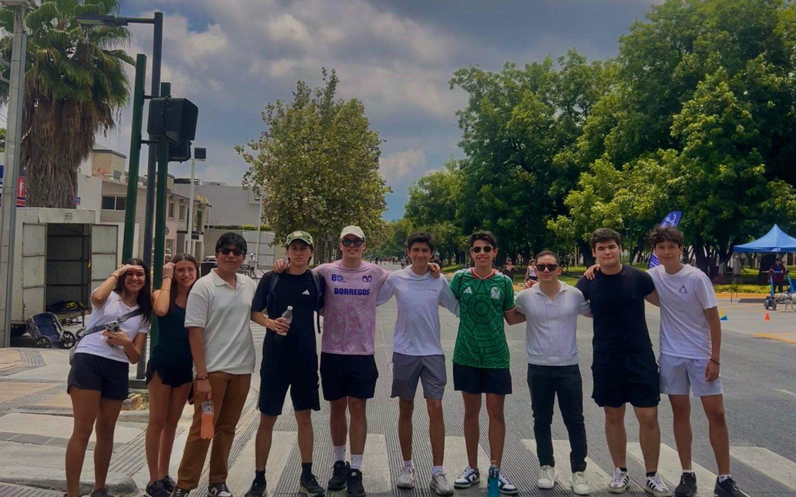

Entrena tu comunicación en el mundo real.
Eventos presenciales en Monterrey donde vienes a practicar, conectar, incomodarte un poco y desarrollar la confianza para comunicarte con cualquier persona.
No vienes a escuchar una clase. Vienes a vivirlo.
Retos, conversaciones y experiencias que te sacan de tu zona de confort.

Conoce la experiencia.
Explora qué hacemos, cómo se vive un evento y la comunidad que estamos construyendo en Monterrey.